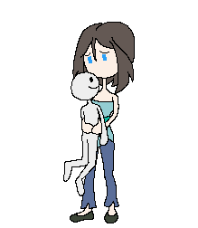

What is Vore?
Cass Python, 2017-01-12In October of 2016, myself and a friend were discussing sexual fetishism and what it was all about, the topic of vore came up, we both knew what it was, but we both had no idea what it's like to have a vore fetish.
Just for the record, I do not know anyone in real life who has a vore fetish, so I apologise for any incorrect facts I get. I'm on a limb here.
From what I found, vore is short for "voraphilia" or "vorarephilia" and it is not a fetish, but a paraphilia (exclusive focus on a specific part of the body other than the genitals). People who like vore would like the idea of wanting to be eaten alive for the sexual pleasure of themselves or someone else.
According to Uban Dictionary's user Slushie, "The most common type of vore is "soft vore", being swallowed or swallowing whole with no bloodshed. There is also the less common "hard vore" which involves the tearing and chewing of flesh. Other types of vore include macrophilia and microphilia, in which one character involved in the vore is larger or smaller than normal."
Right...
Be it grim curiosity or stupidity, I wanted to learn more about said subject. To help me understand vore, I went to /r/vore to have a look around, to say I was turned off would be an understatement. Looking around the subreddit I found some.......... intresting.... stuff. I was most shocked at "unbirth", oh God. Being that I'm a hip web surfer, I summited some questions to the subreddit, Asking 12 questions;
{kind=link}
1. What is vore to you?Luckily, some people on Reddit answered my questions, I was quite surprised at what people said to question three, "At what age did you know you enjoyed vore?" - it seems that people got into vore at a very young age, five-years-old seemed to be the mean for most people. When asked how they found out about vore, most said that it was from media. One example that a person gave was when they saw the 1998 Godzilla movie;
2. How long have you been into vore?
3. At what age did you know you enjoyed vore?
4. How did you discover it and what was your reaction?
5. Is vore a big thing for the furry community?
6. Apart from vore, what other things turn you on? If any?
7. Is vore is a sexual thing to you?
8. Would you say it's normal?
9. Have you ever told anyone about you and vore? If so, how did they react?
10. What do you enjoy about the vore community?
11. What is your favourite thing about vore?
12. How do you feel at the fact that your fetish will never be fully fulfilled?
"My earliest certain memory of finding vore arousing was watching Godzilla 1998, when Godzilla attempts to eat a car containing the main characters."
Also, when I was finding out information on the subject, I found an Encyclopedia Dramatica article that has this quote, it's quite something...
I believe that I was born liking vore, and was born a VORAPHILESeeing a girl (or on occasion guy~) getting swallowed whole (preferably unharmed), then leaving a sexy bulge in the creature that consumed her, just gets me 'tingly'!
From the time I was a little boy, at least two, maybe three years old, I would fantasize about being trapped within something, or being swallowed whole! When watching something like a cartoon for instance, and someone or something gets eaten, I'd feel that 'tingle'!
I don't prefer digestion or scat to be involved in vore, but depending on how it's depicted, it can be VERY fetching!
Others said that they found out about vore by looking around on the Interwebs and some how finding out about it (or, by going on Newgrounds), and it seemed to stick with them.
What people said to question six (Apart from vore, what other things turn you on? If any?) was unsettling to read as the mean of people said some... intresting things, such as being into inflation, "furry stuff", macrophilia, crush, farting and scat. 
Also see this thread for more things they like. (Note, OP is not me)
When I asked /r/vore "Would you say its normal?" (yes, I see the incorrect grammar) most of the people said that it was not, because I'm lazy and to show you how normal the people on /r/vore are, here are what they said;
Not sure. I'd certainly say that people who enjoy this fetish are generally well adjusted individuals, and also it isn't super uncommon. (Seems more common than futa (dick girls) for example. Which is also on my list [of fetishes].)
No, but I think it's normal for people to have things about them that aren't normal. I think of it in the same light as say, transgenderism. It's not common, which is what defines normal, but that in no way means you can't be normal and be transgender.
Absolutely not. Is it possible for normal, well-adjusted individuals to fantasize about eating people/getting eaten? Yes. Is it normal to fantasize about eating people/getting eaten? Nope. It's important to distinguish the fetish from the individual here.
Would you say its normal? Not much, i think if you ask anyone on the street if they like this thing of being swallowed they will at minimal find it very strange.
Hardly normal, but why do you want to be normal? Honestly I thought I was a crazy person until i looked it up.
God no, I honestly don't know of any fetish that is weirder. It did help me with being more open to obscure/odd ideas. I distinctly remember when I was younger thinking about how weird some one was for something stupid, only to realize my fetish was way more out there (I just didn't openly display that part of my self).
Normal is a tricky word. No, I don't think it is normal. I don't think anything beyond heterosexual intercourse for the sole purpose of procreation is normal. The thing is that there isn't anything inherently wrong with something being abnormal.
It isn't, but that doesn't have to be a good thing or a bad thing. Like I said above, it used to be a huge point of shame for me but I'm slowly overcoming it. Nowadays I'm quite glad I have it. I feel its something unique that sets me apart from others and I wouldn't trade all the friends I've made because of it for anything.
That's kind of a loaded question. It's not normal in the sense that it's not widely regarded as an acceptable interest by the public. It is normal in the sense that I don't feel that it represents a mental disorder.
Absolutely not. It's completely ridiculous. People getting off to being eaten? It's totally insane! I embrace the craziness of it though; something this silly I think you just have to own.
normal as any fetish.
It's normal in the sense that it's interchangeable with other harmless but rare sexualities. It's abnormal in that less than 1%, possibly much less, are into it, and that it's not really well-accepted. There are some hilarious people on the internet who think voraraphile are deranged/dangerous/need help.
My last question was a mystery to me, how could someone with a vore fetish have it fully fulfilled? By this, I mean, if say someone has a foot fetish they can have their fetish fulfilled, all you need are someone's feet, but for a vore fetish it's not like you can insert their whole body into someone. What people said was what you would think. Here are some things people said;
I don't mind, really. My other impossible fetishes don't bother me either. The art and stories alone turn me on and I can have a good time fapping. I enjoy the non-consensual stories, but strongly object to that in reality. I also enjoy conventional stuff too so I also enjoy normal activities with other people.I guess it feels like reading Harry Potter and wishing that you were a wizard, but knowing it won't happen. I'm not the only one who wants to be a wizard, right?
Another said
If you want to get technical, it's possible to fulfill certain aspects of the vore fetish. There are certain kinds of dishes that involve eating live octopodes for example, and it's entirely possible to be swallowed by an anaconda if you're really okay with killing yourself.That said, I feel the same way about it as I do about all my other impossible fetishes. I'll never get to have sex with a vampire while she feeds on me, never get to have sex with a lamia all wrapped up in her tail, blah blah blah slime girls, harpies, catgirls, succubi, furries, futanari, so on and so forth. It sucks, but I can deal with it, and silently hope that one day we have a dream machine such as that in Inception, or an actual fully functional virtual reality machine, so I can finally live out all these fetishes.
One more siad
I disagree, I believe that I am fulfilling this fetish. You seem to be under the impression that fulfillment of the fetish means actually eating a person in real life. I think that doing that would be awful and traumatizing. I have no interest in doing that, and thinking about it turns me off. I feel like keeping the fetish a fantasy is implicit in the fetish itself. It's more about entertaining a fantasy where there are no consequences and people are happy or nonplussed about becoming a meal.
Honestly if you have made it this far, god job, I don't have much to say as I think the quotes speak for themselves.
References
I. /r/vore [NSFW]
http://reddit.com/r/vore [archive.is]
II. Question For /r/vore [NSFW]
https://www.reddit.com/r/Vore/comments/59xv3b/question_for_rvore/?st=iuv23qhi&sh=214ad54c [archive.is]
III. Slushie tells us about vore - Uban Dictionary [NSFW] [Internet Archive, archive.is]
http://vore.urbanup.com/1674573#.WGCnEMoYqps.twitter [Internet Archive, archive.is]
IV. "Hunger" by CratedCheese
http://cratedcheese.deviantart.com/art/Hunger-481686758 [Internet Archive, archive.is]
Further reading...
I. Shit I found on /r/vore
i have a few questions about vore [archive.is]
I would like to thank my mates for keeping me from going mad.